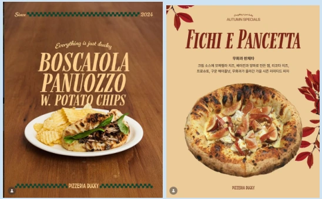

PROJECT 04 / 비즈니스 · 리뷰 분석
소상공인을 위한 AI 마케팅 사이트
리뷰 수집 → 마케팅 전략 → 홍보 이미지 제작을 하나의 사이트에서 따라갈 수 있게 연결했습니다.
01 문제 상황
소상공인은 마케팅 인력과 예산이 부족하고, 리뷰 분석·전략 수립·홍보물 제작을 위해 여러 AI 도구를 개별적으로 다뤄야 합니다. 주변 업체의 고객 반응을 실제 홍보 아이디어로 옮기는 과정을 단순화하고자 했습니다.
02 사용 모델과 데이터
모델·기술
- GPT-5.1 기반 맞춤형 챗봇: STP·4P 틀을 활용한 마케팅 전략과 이미지 제작용 프롬프트를 생성합니다.
- Gemini 이미지 생성: 홍보물 시안을 제작합니다. ChatGPT와 Claude는 수집 프로그램 및 웹 개발에 활용했습니다.
데이터·입력
- 네이버 플레이스에서 수집한 주변 경쟁 업체의 리뷰.
- 업체 특성, 마케팅 목적, 사용할 홍보 채널 등 사용자 입력과 전략 출력 예시.
03 구현 과정
- Playwright 기반 수집 프로그램으로 업체 리뷰를 모읍니다.
- 리뷰와 매장 조건을 마케팅 챗봇에 입력해 타깃 고객, 차별점, 실행 전략을 정리합니다.
- 전략에서 도출한 프롬프트를 이미지 생성 도구에 전달해 홍보물 시안을 만듭니다.
04 핵심 결과
- 리뷰 수집 프로그램, 전략 챗봇, 이미지 제작 도구로 이어지는 사이트와 홍보물 예시를 제작했습니다.
- 출력 형식과 예시를 지정해 소상공인이 바로 읽고 활용할 수 있는 전략을 얻도록 개선했습니다.

05 한계와 발전 방향
- 현재 흐름에는 리뷰와 프롬프트를 직접 복사하는 단계가 남아 있습니다. 모든 과정이 API로 자동 연결된 서비스는 아닙니다.
- 수집 대상의 화면 구조 변경과 실행 환경에 영향을 받으며, 매출·방문자·광고 성과 개선은 측정하지 않았습니다.
자료: 최종보고서. 제출 자료를 바탕으로 정리했으며, 결과는 해당 프로젝트의 구현·실험 범위에 해당합니다.